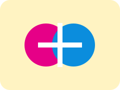

Code as Art
Exploro programação criativa como meio de expressão visual e como forma de encontrar soluções além da abordagem técnica tradicional.
CRIATIVIDADE · CÓDIGOFora do código
Interesses que alimentam a forma como penso, desenho e desenvolvo: do código criativo à cultura, aprendizagem e tecnologia.
Exploro programação criativa como meio de expressão visual e como forma de encontrar soluções além da abordagem técnica tradicional.
CRIATIVIDADE · CÓDIGO
Identidade visual, composição e tipografia: uma paixão anterior à Informática que continua a orientar os meus produtos digitais.
IDENTIDADE · TIPOGRAFIAAcompanho assuntos de desenvolvimento de software, arquitetura de sistemas, inteligência artificial e tecnologias emergentes.
APRENDIZAGEM CONTÍNUAUtilizo vídeo para aprender sobre avanços tecnológicos, criatividade, culturas diferentes e temas que expandem a minha perspetiva.
CURIOSIDADE · PESQUISAInteresso-me por tradição e identidade cultural, também exploradas em trabalhos académicos de Antropologia Cultural de Moçambique.
TRADIÇÃO · IDENTIDADEÁudio
Breve faixa de apresentação incluída no portfólio, para demonstrar o uso nativo do elemento áudio em HTML5.
Vídeo
Vídeo incorporado para demonstrar a integração multimédia pedida no trabalho, sem usar JavaScript ou frameworks.